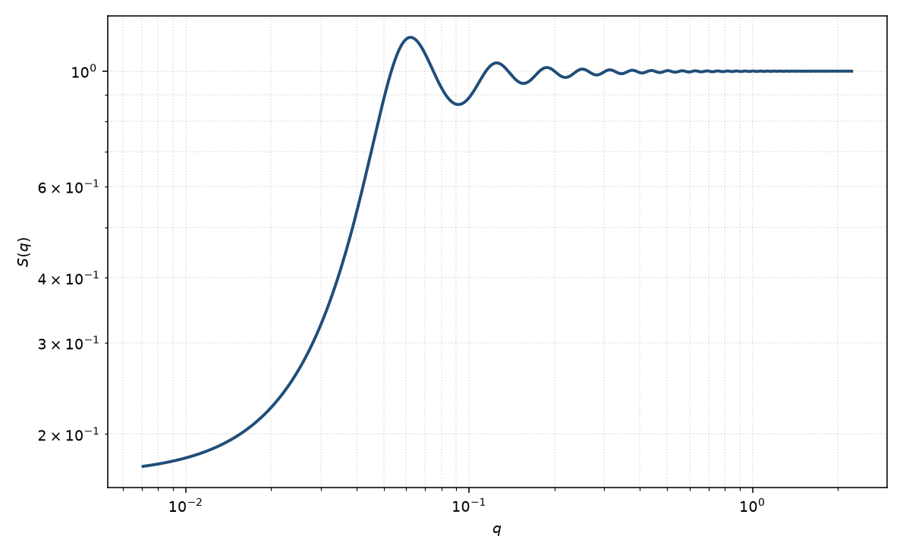

Hayter–MSA 结构因子
Hayter MSA
适用场景
带电胶体或胶束在低到中等盐下以屏蔽库仑（Yukawa）势相互作用时，用 Hayter–Penfold 平均球近似及其 rescaled MSA（RMSA）。典型对象：离子胶束、电荷稳定乳胶、低盐蛋白质，以及低 $q$ 被强烈压低、相关峰随盐浓度移动的体系。
高盐、静电几乎被屏蔽时退回硬球。短程吸引主导时不要用纯排斥 Hayter。体积分数与 Debye 长度必须有独立约束，否则电荷会被吸收进 $\kappa$ 与 $\eta$。
物理图像
硬核外交互为 Yukawa，接触势 $\gamma$ 无量纲：$\beta u(r)=\gamma(\sigma/r)\mathrm{e}^{-\kappa(r-\sigma)}$（$r>\sigma$），于是 $\beta u(\sigma^+)=\gamma$。MSA 对该势有解析 $c(r)$（Waisman / Hayter–Penfold）。当接触处 $g(\sigma^+)$ 算出为负时，Hansen–Hayter 把硬核放大到有效直径（RMSA），使接触值非负，这是稀释强电荷体系的常用修正。
$S(0)$ 随电荷与 Debye 长度增大而进一步下降（渗透压升高）。相关峰位置近似 $2\pi/d$，平均间距 $d\sim \sigma\,\eta^{-1/3}$。盐升高则 $\kappa$ 增大、峰减弱并外移。
示意图

核心公式
出发点
OZ 与结构因子
$$h(r)=c(r)+n\int c(|\mathbf{r}-\mathbf{r}'|)\,h(r')\,\mathrm{d}^3r',\qquad S(q)=\bigl[1-n\hat{c}(q)\bigr]^{-1}.$$硬核加屏蔽库仑（Yukawa）。令 $x=r/\sigma$、$k=\kappa\sigma$，无量纲接触势 $\gamma=\beta u(\sigma^+)$：
$$\beta u(x)=\gamma\,\frac{\mathrm{e}^{-k(x-1)}}{x}\quad(x\gt 1),\qquad u=\infty\ (x\lt 1).$$平均球近似（MSA）：核内 $g=0$（即 $h=-1$），核外 $c(r)=-\beta u(r)$。$\kappa$ 由离子强度决定；室温水溶液 $1{:}1$ 电解质 $\kappa\simeq 3.29\sqrt{I}\ \mathrm{nm}^{-1}$（$I$ 以 mol L$^{-1}$）。
推导
Waisman / Hayter–Penfold 在核内把 $c(x)$ 写成硬球三次式再加筛选的双曲项：
$$c(x)=A+Bx+\tfrac12\eta A x^3+\frac{C\sinh(kx)}{x}+\frac{D\bigl(\cosh(kx)-1\bigr)}{x}\quad(x\lt 1),$$$x\gt 1$ 则 $c(x)=-\gamma\,\mathrm{e}^{-k(x-1)}/x$。待定系数 $A,B,C,D$ 由接触处与 Yukawa 衔接以及核内 OZ 约束决定，可化成一个四次方程。核外 Yukawa 的傅里叶变换是初等的。令 $A_q=q\sigma$，
$$n\hat{c}_{\mathrm{Y}}(q)=-24\eta\gamma\,\frac{k\sin A_q+A_q\cos A_q}{A_q(A_q^2+k^2)}.$$核内多项式与 $\sinh/\cosh$ 的傅里叶同样闭式。二者相加后
$$S(q)=\bigl[1-n\hat{c}(q;\eta,\gamma,k)\bigr]^{-1}.$$若算出的接触值 $g(\sigma^+)<0$（稀释强电荷时常发生），Hansen–Hayter 的 rescaled MSA 把硬核放大到有效直径 $\sigma'$，使 $g(\sigma'^+)=0$，再用 $(\eta',k',\gamma')$ 计算 $S(q)$。
低 $q$ 与渐近
$A_q\to 0$ 时 Yukawa 尾 $n\hat{c}_{\mathrm{Y}}(0)=-24\eta\gamma(1+k)/k^2$。在核内仍用 PY 硬球压缩率的 RPA 叠加（MSA 的首项）给出
$$S(0)^{-1}\approx\frac{(1+2\eta)^2}{(1-\eta)^4}+24\eta\gamma\,\frac{1+k}{k^2}.$$排斥 $\gamma>0$ 使 $S(0)$ 随 $\gamma$ 增大、随 $k=\kappa\sigma$ 减小而进一步下降。稀溶液 Debye–Hückel 极限（硬核可忽略）化为
$$S(q)\approx\Bigl[1+\frac{n\,4\pi L_{\mathrm{B}}Z_{\mathrm{eff}}^2}{q^2+\kappa^2}\Bigr]^{-1},\qquad S(0)\approx\bigl[1+n\,4\pi L_{\mathrm{B}}Z_{\mathrm{eff}}^2/\kappa^2\bigr]^{-1},$$其中 $L_{\mathrm{B}}$ 为 Bjerrum 长度。DLVO 接触势与有效价的关系为 $\gamma=(Z_{\mathrm{eff}}^2 L_{\mathrm{B}}/\sigma)\bigl[\mathrm{e}^{k/2}/(1+k/2)\bigr]^2$。相关峰约在 $q\sim 2\pi/d$、$d\sim\sigma\,\eta^{-1/3}$。$q\sigma\gg 1$ 时 $S(q)\to 1$。
参数表
| 参数 | 符号 | 含义 | 单位 | 典型范围 |
|---|---|---|---|---|
| 硬球半径 | $R$ | 硬核半径，$\sigma=2R$ | Å | 含水化层的有效半径 |
| 体积分数 | $\eta$ | 有效硬球体积分数 | 无量纲 | 由浓度与 $\sigma$ 约束 |
| Debye 长度 | $\kappa^{-1}$ | 静电筛选长度 | Å 或 nm | 由离子强度计算，不宜与电荷同时自由 |
| 接触势 | $\gamma$ | 无量纲接触值，$\beta u(\sigma^+)=\gamma$ | 无量纲 | 由有效价与 $\kappa\sigma$ 估计后微调 |
| 标度 / 本底 | $\mathrm{scale}$, $B$ | $I=P\,S+B$ 的前置与本底 | 与强度单位一致 | 实验相关 |
拟合注意
可辨识性：$S(q)$ 的半径（或直径）与形式因子半径、体积分数与标度在同时自由拟合时高度退化。先在稀溶液固定 $P(q)$，再用浓度系列的低 $q$ 变化约束 $S(q)$；不要把 $P(q)$ 与 $S(q)$ 的全部参数一起放开。 Hayter 必须约束体积分数与 Debye 长度：$\eta$ 用浓度与有效体积；$\kappa$ 用已知盐与缓冲。只放开有效电荷（或 $\gamma$）。三套参数一起漂会得到任意组合的“看起来像”的相关峰。
取向对球无关。多分散电荷与尺寸都会抹浅峰。磁性测量时静电 $S(q)$ 由核电荷决定，磁 $P(q)$ 仍乘同一 $S(q)$。
相近模型
- 硬球结构因子 — 高盐、$\gamma\to 0$ 的极限。
- 黏性硬球结构因子 — 短程吸引，低 $q$ 升而非压。
- 方阱结构因子 — 吸引方阱，不是 Yukawa 排斥。
- 双 Yukawa 结构因子 — 在排斥之外再加一段吸引。
参考文献
- Hayter, J. B.; Penfold, J. An analytic structure factor for macroion solutions. Mol. Phys. 1981, 42, 109–118. DOI: 10.1080/00268978100100091
- Hansen, J.-P.; Hayter, J. B. A rescaled MSA structure factor for dilute charged colloidal dispersions. Mol. Phys. 1982, 46, 651–656. DOI: 10.1080/00268978200101471